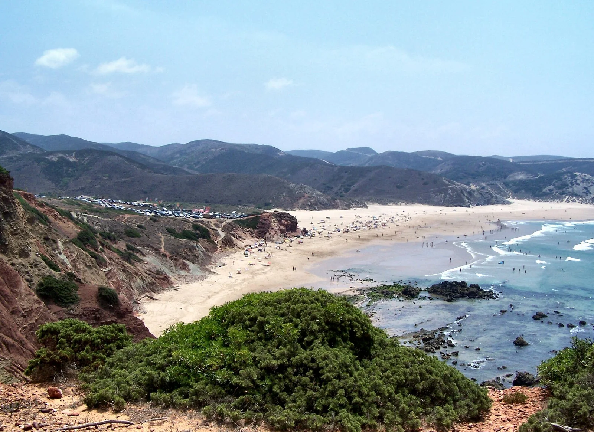

Praia do Amado
Carrapateira, Portugal · surf

Une plage atlantique près de Carrapateira, dans le sud-ouest portugais. Un arrêt pour un itinéraire de surf en Algarve.
- Lieu
- Carrapateira, Portugal
- Niveau
- Variable selon les conditions
- Activités
- surf
- Type d'eau
- Mer / océan
- Coordonnées
- 37.17, -8.90 (position approximative du secteur)
Ouvrir dans Ocean Buddy Télécharger sur l'App Store
Source : Visit Portugal.